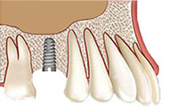

歯を失ったときには早めに治療しましょう
～インプラント・入れ歯治療～
失ってしまった歯の機能回復をはかる処置を補綴（ほてつ）治療といいます。インプラントや入れ歯、ブリッジといった補綴（ほてつ）物を使う治療です。三島駅・下土狩駅の近くの歯医者「MI総合歯科クリニック」では、さまざまな治療に対応します。大切なのは患者様に合う治療法を選択することですので、お気軽にご相談ください。
歯を失ったまま放置してはいけません
「1本くらい平気だろう」と、歯を失ったままにしておくのは、健康を脅かすリスクを負うことです。口腔内だけでなく身体全体に悪影響がおよぶ危険性もあります。健康のために、すぐにインプラント・入れ歯またはブリッジ治療で補うことが大切です。
咬み合わせの悪化
欠損歯の両となりの歯は支えを失い、だんだんと空いたスペースに歯が傾きます。また、咬み合う歯が伸びてきて、歯並びが悪くなり、咬み合わせのバランスがくずれる危険性があります。
虫歯・歯周病リスク
咬み合わせや歯並びが悪くなると、歯と歯の間に食べカスが詰まりやすくなり、ブラッシングもしにくくなります。その結果、虫歯や歯周病のリスクが高まってしまいます。
見た目が悪くなる
歯を失えば見た目が悪くなります。そのせいで大きく口を開けられなくなり、気持ちが落ち込んでしまうこともあります。また、奥歯を失うと頬やあごの輪郭が内側に寄り、頬がこけたりあごがたるんで見えたりしてしまうのも心配です。
胃腸への負担・口臭
食べ物を咬み切ったり、咬み砕いたりすることが難しくなります。咀嚼（そしゃく）不足は唾液の分泌量を減らし、消化が悪くなって胃腸への負担が増加します。また、唾液不足は口臭の原因にもなるのです。
脳への刺激低下
咀嚼（そしゃく）は脳に刺激を与え、脳への血流量を高める作用があるので老化防止にも効果があります。歯を失ってしまうと、老化を進めてしまう心配があるのです。
正しい発音ができなくなる
欠損歯の部分から空気が漏れるとクリアな発音に支障をきたすことがあります。そのせいで、会話を楽しめなくなる可能性もあるのです。
自分の歯のように咬める～インプラント治療～
インプラントとは、あごの骨にボルト状のチタン製人工歯根を直接埋入し、そこに人工歯を装着する補綴治療です。見た目が自然で、装着感や咬み心地に優れているなど多くのメリットがありますが、外科手術が必要で、自費診療のため費用が高いといったデメリットもあります。
インプラント治療のメリット・デメリット
| メリット | デメリット |
|---|---|
|
|
当院インプラント治療の8つのポイント
- 1ポイント
- 骨が少ない方でも安心な「オステオプッシャー」
- 2ポイント
- 「ソケットリフト」で負担をできるだけ抑える
- 3ポイント
- 治療期間を短縮「薄膜HAコーティングインプラント」
- 4ポイント
- 治療後までアフターフォロー「インプラント保証制度」
- 5ポイント
- 安心な治療を心がける「日本口腔インプラント学会専門医」
- 6ポイント
- メリット・デメリット・費用面などの不安を解消「丁寧な説明」
- 7ポイント
- 綿密な検査で精度の高い治療「歯科用CTによるシミュレーション」
- 8ポイント
- 清潔で安心な専用治療室で手術「徹底した滅菌環境」
骨をほとんど削らずに埋入～オステオプッシャー～

骨をほとんど削らずに埋入
～オステオプッシャー～
従来のインプラント手術では、骨を大きく削らなければならず、また、インプラントを固定するためには十分な骨量が必要なため、少ない場合は骨を増やしたり、移植したりする必要がありました。
そこで当院では、できるだけ負担をかけない「低侵襲」のインプラント手術を行うためにプラトンジャパンと水口稔之先生が開発した器具「オステオプッシャー」を活用します。オステオプッシャーは骨を削らず、骨を押し広げてインプラントを埋入するための穴をつくります。そのため、これまではインプラント手術ができなかったような細い骨にもインプラント埋入が可能です。これによって、骨の幅が少ない場合でも確実に、かつ短時間でインプラント治療が実現できるようになりました。
また、ソケットリフトは侵襲が大きく、術後の腫れも大きくなってしまいます。そこで当院では、オステオプッシャーを用いた、お身体に負担の少ないインプラント治療をご提案しています。
ほとんど骨を削らずにインプラントを埋入できる
あごの骨をたくさん削って穴をつくるのとは異なり、オステオプッシャーは、骨を削らずに、骨を押し拡げてインプラントを埋入します。
- 
比較的簡単に骨を増やせる
あごの骨を削って穴をあけると骨は少なくなる一方でしたが、オステオプッシャーは削らずに骨を押し拡げるので細い骨も太くしてインプラントを埋入します。
足りない骨を補う～あごの骨の再生療法～
インプラント治療を行うためには、人工歯根を埋め込めるだけの十分なあごの骨量が必要です。しかし、もともとあごの骨が薄い方や、歯周病によってあごの骨が吸収されてしまった場合には骨造成治療を行いあごの骨を確保します。当院では、患者様のケースに合わせて治療方法を選択し、インプラント治療の実現をはかります。
サイナスリフト
骨の幅が5mm未満の場合に用いられる治療法です。歯ぐきの横方向から穴を開け、上顎洞粘膜を押し上げたすき間に自家骨（身体から採取した骨など）もしくは人工骨を挿入して、インプラント治療に必要な骨量を確保します。
ソケットリフト
インプラントを埋入する穴から上顎洞の粘膜を押し上げ、すき間に自家骨または人工骨を挿入して、インプラント治療に十分な骨量を確保します。オステオプッシャーによって、より低侵襲に手術ができるようになりました。
GBR法
歯周病が原因で失ったあごの骨の再生目的に行われるのがGBR法です。骨量が少ない箇所へ骨補填剤を埋入し、スペースを確保して骨の再生を促します。インプラント手術の前または同時のタイミングでも行えます。
インプラント治療を専門に行う歯科医師が治療します
当院の理事長は、「水口インプラントセンター新宿」の院長として長年インプラント治療を行ってきました。静岡では数少ない「日本インプラント臨床研究会認定会員」「日本口腔インプラント学会専門医」であり、「ICOI 認定医」「国際口腔インプラント学会認定医（ISOI認定医）」といった資格を持っています。また、インプラント学会の専門歯科衛生士も常駐しており、安心して受けていただけるインプラント治療の実現を目指します。
近年ではインプラント治療を行っている歯科医院も増え、虫歯や歯周病、また事故などで歯を失った場合の選択肢として定着していますが、インプラント治療には高い技術が欠かせません。その実現のため、常に、インプラント治療についてのあたらしく優れた技術や設備を積極的に吸収し、習得し、そして実践することを心がけます。
私たちは、これまでに数多くのインプラント治療を実践し、学会やインプラント専門誌などで発表を行ってきました。また、患者様に信頼していただけるように、日々技術と知識を蓄積しています。「インプラント治療に対して不安・恐怖がある」「骨が細くてインプラント治療ができないと診断された」「入れ歯が合わずに食事が楽しめない」「失った歯を蘇らせたい」などのお悩みのお持ちの方は、まずは当院にご相談ください。みなさんのお悩みを解消するために、もっとも合うと考えられる治療法をご提案いたします。
PICKUPインプラント治療後はメインテナンスが大切です
インプラントはケアとメインテナンスをしっかり行えば、半永久的に使用できます。しかし、ケアを怠るとせっかく入れたインプラントが抜け落ちてしまうことがあり、とくにインプラント周辺に発生する「インプラント歯周炎」には気をつけなければなりません。インプラントは人工素材ですので虫歯などにはなりませんが、埋め込まれたご自身の身体には、さまざまなトラブルが発生する可能性があります。
いつまでも快適にインプラントを使用し続けるためには、毎日のブラッシングによるセルフケアが大切です。そして、歯医者による定期検診やクリーニングといったメインテナンスもあわせて受けるようにしましょう。
当院のインプラント治療は10年保証です
当院はガイドデントのインプラント10年保証の認定を受けた医療機関です。この認定医療機関にて受けられたインプラント治療において事故や問題が発生しても、保証期間内は再治療の保証が受けられます。患者様が転居なさった場合も認定医療機関のネットワークにより、転居先での保証が可能です。10年保証を受けていただくためには定期メインテナンスの受診が必須ですのでご了承ください。
インプラント10年保証の詳細については株式会社ガイドデントホームページをご確認ください。
インプラント治療料金表
| CT、パノラマ検査費 （※外部持ち出しの場合は20,000円） |
10,000円 |
|---|---|
| インプラント体（手術費、投薬込み） 1本 | 280,000円 |
| 上部構造（オールセラミックスクラウン、オールジルコニアクラウン） | 100,000円 |
| 骨造成（サイナスリフト、ソケットリフト、GBR） | 50,000円 |
| 仮歯 1本 | 10,000円 |
| 追加の投薬 | 5,000円 |
| 磁性アタッチメント（1個） | 100,000円 |
| マグネットデンチャー（磁性アタッチメント2個まで） | 350,000円 |
| インプラントメインテナンス | 5,000円 |
※表示価格はすべて税抜きです
入れ歯・ブリッジ治療について
歯を失ってしまった場合の治療法はインプラントだけではありません。入れ歯（義歯）やブリッジといった治療法も選択肢としてご検討いただけます。当院では、患者様のご要望をお伺いし、もっとも会うと考えられる治療をご提案いたしますので、お悩みやご希望などがありましたら、遠慮なくお伝えください。
ブリッジ治療
欠損歯の両となりの歯を削り、それを支えとして被せ物を装着するのがブリッジという治療法です。安定感や咬み心地に優れており、保険も適用されることから経済的なメリットもあります。ただし、健康な歯を削らなくてはいけなかったり、被せ物部分が虫歯になりやすかったり、欠損歯のあごの骨が衰えやすかったりといったデメリットもあります。
入れ歯治療
入れ歯（義歯）は、お口の中の多くの歯を失ってしまった場合に効果的な補綴（ほてつ）治療です。自費診療なら費用は高めですが、見た目や咬み心地に優れた入れ歯をつくれます。逆に保険適用の入れ歯は費用を抑えられますが、異物感やズレ、目立ちやすいなどのデメリットがあります。
インプラント治療料金表
| マグネットデンチャー（磁性アタッチメント2個まで） | 350,000円 |
|---|---|
| マグネット1個 | 100,000円 |
| シリコンデンチャー | 150,000～300,000円 |
| 金属床義歯 | 150,000～350,000円 |
※表示価格はすべて税抜きです